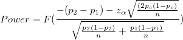
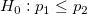
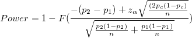
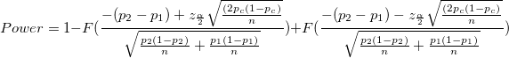
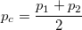

/math-e7498f0843b3288c7d46b2c80ccca98b.png "H_0:P_1\ge P_2")
片側検出力：

片側検出力：


両側検出力 

/math-7b8b965ad4bca0e41ab51de7b31363a1.png) : 各グループのサンプルサイズ
: 各グループのサンプルサイズ
/math-03b632315ee5bee654b60a6bd902a249.png) : 母比率1
: 母比率1
/math-6fe97b358b528edc477ba63d50b652af.png) : 母比率2
: 母比率2

/math-3abc4a58be38c24030120ec6c3464783.png) : 正規分布の
: 正規分布の/math-7b7f9dbfea05c83784f8b85149852f08.png) レベルの上側棄却限界値
レベルの上側棄却限界値
/math-1cf3a44a9e37199f38d0e49c787182c9.png) : 正規分布の
: 正規分布の/math-d10e63f9fadfc68af5748d918bc9915d.png) レベルの両側棄却限界値
レベルの両側棄却限界値
/math-800618943025315f869e4e1f09471012.png) は標準正規分布の累積分布関数を表しています。
は標準正規分布の累積分布関数を表しています。
Originは、検出力等価で反復アルゴリズムを使用しています。各反復において、トライアルサンプルサイズのためのパワーが評価され、評価されたパワーが整数サンプルサイズに対応する値、および、目標値よりも大きい、最も近い到達したときに反復は停止されます。